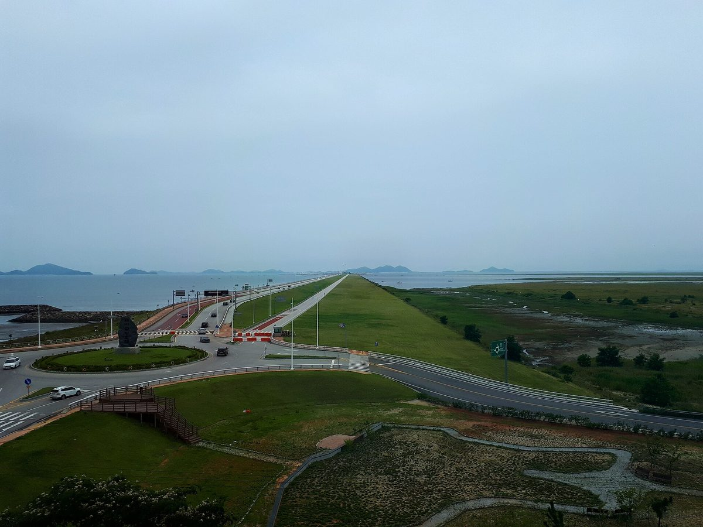

새만금희망태양광 99MW, 주민참여 두 갈래 검토했지만 전북도민 펀드는 금감원 지역 제한 지적에 막혀

총사업비 1,575억 원, 2021년 12월 상업운전…반경 1km 주민 약 63억 원 규모 주민법인 투자 추진, 회사는 연 6억6,100만 원 지역 기부·전북 중고생 장학금 설명
전북 군산 새만금 매립지의 99MW급 태양광 발전소 ㈜새만금희망태양광이 사업 초기 주민참여 방식으로 발전소 인근 주민법인 투자와 전북도민 펀드 두 가지를 검토했으나, 도민 펀드는 금융감독원이 지역 제한 문제를 제기해 추진하지 못한 것으로 나타났다. 이 발전소는 새만금 재생에너지 3.0GW 조성계획의 선도사업으로 2020년 12월 착공해 2021년 12월 상업운전에 들어갔으며, 총사업비 1,575억 원에 사업 면적은 약 34만8,000평이다. 새만금 육상태양광 단지는 구역마다 약 99MW씩 3개 구역 모두 297MW 규모로, 나머지 두 구역은 군산시·한국서부발전 등이 참여한 군산육상태양광㈜과 새만금개발공사가 주도한 ㈜새만금세빛발전소가 운영한다. 당초 자금 계획은 자기자본 20%, 주민참여 10%, 프로젝트파이낸싱(PF) 70%로 주민참여 몫이 약 157억 원이었고, 이와 별도로 반경 1km 안 주민이 약 63억 원 규모 주민법인을 세워 정부 정책자금 대출로 투자하는 방식이 추진됐지만 실제 투자가 이뤄졌는지는 알려지지 않았다. 회사 측은 반경 1.5km 안 저소득 가구에 63억 원에 대한 연 7% 이자수익을 돌려주고, 해마다 6억6,100만 원을 교통약자 지원·장학·사회복지공동모금회 복지사업에 기부하며 전북 중·고교에 학교당 최소 1명씩 장학금을 준다고 설명했다. 이동철 ㈜새만금희망태양광 과장은 "태양광 발전으로 얻은 수익을 지역사회에 돌려주고 있다"고 말했지만, 사업 과정에서는 환경단체가 사업 부지를 갯벌로 보고 강하게 반대했고 주민들이 사업 진행을 잘 몰랐던 면도 있었다고 덧붙였다.
시민에너지 관점
공공이 바다를 메워 만든 땅에 세운 1,575억 원짜리 발전소에서 주민참여 몫은 10%로 잡혔는데, 그마저 도민 펀드가 지역 제한 문제로 막혔다는 것은 지금 제도가 지역 주민의 출자를 오히려 가로막을 수 있음을 보여 준다. 이자수익 환원과 기부, 장학금이 소중하지 않다는 것이 아니라, 기부는 회사가 정하는 혜택이고 지분은 주민이 갖는 권리라는 점이 다르다. 덴마크 코펜하겐 앞바다의 미델그룬덴 해상풍력단지는 풍력발전기 20기 가운데 10기를 시민 협동조합이 소유해, 대형 발전소도 주민이 주인이 될 수 있음을 일찍이 보여 줬다. 새만금에 남은 재생에너지 사업부터는 정부와 금융당국이 발전소 인근 주민과 도민을 대상으로 한 출자 모집의 길을 먼저 열어야 한다.
출처: 한라일보 2026-10-26 고대로 원문 보기
セマングム希望太陽光99MW、住民参加の2つの方式を検討も、全羅北道民ファンドは金融監督院の地域制限の指摘で頓挫
総事業費1,575億ウォン、2021年12月に商業運転…半径1km以内の住民による約63億ウォン規模の住民法人の投資を推進、会社は年6億6,100万ウォンの地域寄付と全羅北道の中高生への奨学金を説明
全羅北道群山市のセマングム埋立地にある99MW級の太陽光発電所、株式会社セマングム希望太陽光は、事業初期の住民参加の方式として発電所周辺の住民法人による投資と全羅北道民向けファンドの2つを検討したが、道民ファンドは金融監督院が地域制限の問題を提起したため実現できなかったことが分かった。この発電所はセマングム再生可能エネルギー3.0GW造成計画の先導事業として2020年12月に着工し、2021年12月に商業運転を始めた。総事業費は1,575億ウォン、事業面積は約34万8,000坪。セマングムの陸上太陽光団地は区域ごとに約99MWずつ3区域で計297MW規模で、残る2区域は群山市や韓国西部発電などが参加する群山陸上太陽光株式会社と、セマングム開発公社が主導する株式会社セマングムセビッ発電所が運営している。当初の資金計画は自己資本20%、住民参加10%、プロジェクトファイナンス（PF）70%で、住民参加分は約157億ウォンだった。これとは別に、半径1km以内の住民が約63億ウォン規模の住民法人をつくり政府の政策資金の融資で投資する方式が推進されたが、実際に投資が行われたかどうかは明らかになっていない。会社側は、半径1.5km以内の低所得世帯に63億ウォンに対する年7%の利子収益を還元し、毎年6億6,100万ウォンを交通弱者支援や奨学、社会福祉共同募金会を通じた福祉事業に寄付しているほか、全羅北道の中学・高校に1校あたり最低1人の奨学金を出していると説明した。同社のイ・ドンチョル課長は「太陽光発電で得た収益を地域社会に還元している」と語る一方、環境団体が事業地を干潟とみなして強く反対し、住民が事業の進み具合をよく知らなかった面もあったと付け加えた。
市民エネルギーの視点
公共が海を埋め立てて造った土地に建つ1,575億ウォンの発電所で住民参加分は10%とされたが、それすら道民ファンドが地域制限の問題で阻まれたことは、今の制度がかえって地域住民の出資を妨げうることを示している。利子収益の還元や寄付、奨学金が大切でないというのではなく、寄付は会社が決める恩恵であり、持ち分は住民が持つ権利だという点が違う。デンマーク・コペンハーゲン沖のミドルグルンデン洋上風力発電所は、風車20基のうち10基を市民協同組合が所有し、大規模な発電所でも住民が主人になれることを早くから示してきた。セマングムに残る再生可能エネルギー事業からは、政府と金融当局が発電所周辺の住民や道民を対象とした出資募集の道をまず開くべきだ。
出典: 漢拏日報（Halla Ilbo） 2026-10-26 コ・デロ 原文を読む
新万金希望太阳能99MW曾研究两种居民参与方式，面向全罗北道居民的基金因金融监督院提出地域限制问题而受阻
总投资1,575亿韩元，2021年12月商业运行…曾推进由半径1公里内居民成立约63亿韩元规模居民法人进行投资，公司称每年向地方捐赠6亿6,100万韩元并为全罗北道初高中生提供奖学金
位于韩国全罗北道群山市新万金围垦地的99MW级太阳能电站——新万金希望太阳能株式会社，在项目初期曾研究两种居民参与方式：由电站周边居民成立居民法人进行投资，以及面向全罗北道居民的基金；但道民基金因金融监督院提出地域限制问题而未能推进。该电站作为新万金可再生能源3.0GW建设计划的先导项目，于2020年12月开工，2021年12月投入商业运行，总投资1,575亿韩元，项目面积约34万8,000坪。新万金陆上太阳能园区分为3个区域，每个区域约99MW，合计297MW，其余两个区域分别由群山市和韩国西部发电等参与的群山陆上太阳能株式会社、新万金开发公社主导的新万金Sebit发电所株式会社运营。最初的融资计划为自有资本20%、居民参与10%、项目融资（PF）70%，居民参与部分约157亿韩元。另外，还曾推进由半径1公里内居民成立约63亿韩元规模的居民法人、借入政府政策资金进行投资的方式，但投资是否实际执行尚不清楚。公司方面表示，向半径1.5公里内的低收入家庭返还63亿韩元对应的年7%利息收益，每年向交通弱势群体支援、奖学和通过社会福利共同募金会开展的福利项目捐赠6亿6,100万韩元，并为全罗北道每所初高中至少1名学生提供奖学金。该公司课长Lee Dong-cheol表示"正在把太阳能发电所得收益回馈地方社会"，同时也提到，环保团体曾把项目用地视为滩涂而强烈反对，周边居民也有不太了解项目进展的一面。
市民能源视角
在公共填海造出的土地上建起的1,575亿韩元电站，居民参与份额只定为10%，而就连面向道民的基金也因地域限制问题受阻，这说明现行制度反而可能妨碍当地居民出资。利息返还、捐赠和奖学金并非不重要，但捐赠是公司决定的恩惠，股份则是居民拥有的权利，两者性质不同。丹麦哥本哈根外海的米德尔格伦登海上风电场，20台风机中有10台归市民合作社所有，早已证明大型电站也可以由居民当主人。从新万金剩余的可再生能源项目开始，政府和金融当局应当首先为面向电站周边居民和道民的出资募集打开通道。
来源: Halla Ilbo 2026-10-26 Ko Dae-ro 查看原文
Saemangeum Hope Solar's 99MW plant weighed two resident-participation routes, but a fund for North Jeolla residents was blocked by the financial regulator's regional-limit concerns
KRW 157.5 billion project in commercial operation since December 2021; a resident corporation of about KRW 6.3 billion for people within 1km was pursued, and the company says it donates KRW 661 million a year locally and funds scholarships for North Jeolla students
Saemangeum Hope Solar, a 99MW-class solar plant on reclaimed land at Saemangeum in Gunsan, North Jeolla Province, considered two ways of bringing residents into the project at its early stage: investment through a corporation formed by people living near the plant, and a fund open to North Jeolla residents. The fund did not go ahead after the Financial Supervisory Service raised concerns about restricting it by region. Built as the lead project of the 3.0GW Saemangeum renewable energy plan, the plant broke ground in December 2020 and began commercial operation in December 2021, with a total project cost of KRW 157.5 billion and a site of about 348,000 pyeong (a Korean unit of area). The Saemangeum onshore solar complex consists of three zones of about 99MW each, 297MW in total; the other two are run by Gunsan Onshore Solar, in which Gunsan City and Korea Western Power take part, and Saemangeum Sebit Power Plant, led by the Saemangeum Development Corporation. The original financing plan was 20% equity, 10% resident participation and 70% project finance, putting the residents' share at about KRW 15.7 billion; separately, a scheme was pursued in which residents within 1km would set up a corporation of about KRW 6.3 billion and invest with loans from government policy funds, but whether that investment was actually made is not known. The company says it returns 7% annual interest on KRW 6.3 billion to low-income households within 1.5km, donates KRW 661 million a year to transport support for people with limited mobility, scholarships and welfare programs through the Community Chest of Korea, and gives scholarships to at least one student per middle and high school in North Jeolla. "We are returning the profits from solar power to the local community," said Lee Dong-cheol, a manager at the company, adding that environmental groups had strongly opposed the project, regarding the site as tidal flats, and that nearby residents had not been well aware of its progress.
Citizen Energy View
At a KRW 157.5 billion plant built on land the public reclaimed from the sea, the residents' share was set at just 10%, and even the fund for provincial residents was blocked over regional limits, showing that current rules can end up obstructing local investment. Interest payments, donations and scholarships are not unimportant, but a donation is a benefit the company decides on, while a stake is a right residents hold. Off Copenhagen, the Middelgrunden offshore wind farm has 10 of its 20 turbines owned by a citizens' cooperative, an early proof that even large power plants can be owned by local people. Starting with the remaining renewable projects at Saemangeum, the government and financial regulators should first open the way for share offers aimed at residents near the plants and in the province.
Source: Halla Ilbo 2026-10-26 Ko Dae-ro Read the original